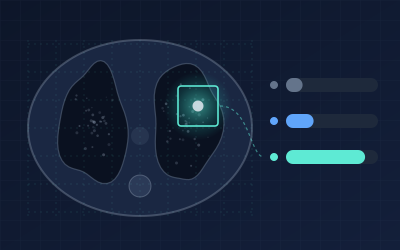
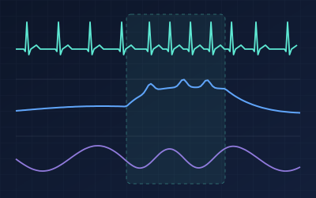
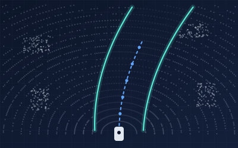
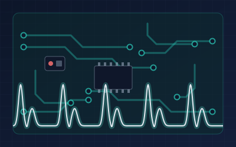
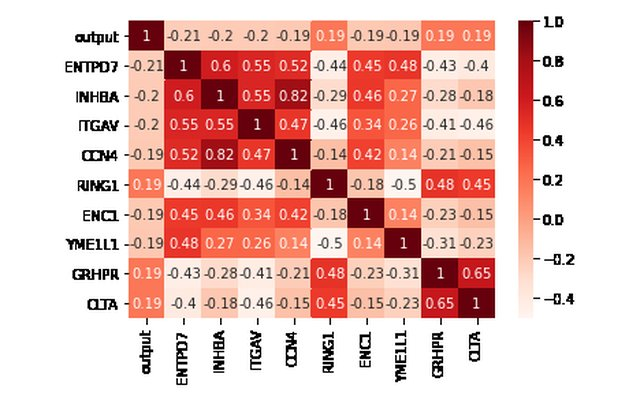
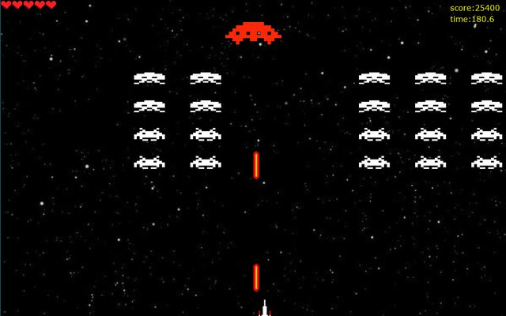

About
I’m a Master’s student in Mechanical Engineering at the University of Alberta, working where robotics, machine learning and human motor learning meet. In the IDEA Lab, I design control strategies and data-driven algorithms that adapt robotic rehabilitation to each person in real time, keeping therapy challenging enough to drive learning, without becoming discouraging.
My path here started in electrical engineering at K. N. Toosi University of Technology, where I designed a digital blood pressure monitor and worked on oscillometric and PPG signal processing, from active filter circuits and PCBs to estimation algorithms. Alongside my studies, I spent seven years as an IT manager looking after a company’s systems, network and website.
My research sits on two questions. How should a robot adjust a task’s difficulty as a person learns? And how can we tell, beyond a game score, that they are actually learning? I’ve approached the first with adaptive control, a fuzzy-PID difficulty controller overseen by a plateau detector, and the second with preference-based inverse reinforcement learning. Both lines of work were published at IEEE BioRob 2026.
Alongside that, I build deep learning models for medical images and physiological signals (CNNs, Transformers, autoencoders) and robot perception pipelines such as 3D LiDAR SLAM in ROS. I also teach: this term I’m a teaching assistant and lecturer for Applied Computational Intelligence for Engineers.
Outside the lab, I volunteer at research and engineering conferences on campus. I speak Persian and English, and some French.
Experience
-
2025 — Present Graduate Research Assistant · IDEA Lab, University of Alberta
Designing control strategies and data-driven algorithms to optimize robotic rehabilitation systems, supervised by Dr. Milad Nazarahari and Prof. Albert H. Vette. My thesis focuses on dynamic difficulty adjustment: personalizing therapy and enhancing motor learning through adaptive difficulty and real-time performance analytics.
- Designed a two-layer difficulty controller for robot-assisted upper-limb exergames, a fuzzy gain-scheduled PID loop under a supervisory plateau and slacking detector. First author, IEEE BioRob 2026.
- Evaluated it in a four-participant feasibility study: every participant improved, with normalized performance up 17.6% after training and partly retained an hour later.
- Co-authored a preference-based inverse RL framework that learns a reward function from ranked human gameplay trajectories and uses it to assess motor learning (10 participants, AUC-ROC 0.85).
- Dynamic Difficulty Adjustment
- Fuzzy-PID Control
- Reinforcement Learning
- Inverse RL
- Human-in-the-Loop
- Rehabilitation Robotics
- Motor Learning
-
2026 — Present Teaching Assistant · University of Alberta
MEC E 694 — Applied Computational IntelligenceMEC E 420 — Feedback Control DesignLeading and lecturing a three-hour class session, holding office hours and marking assignments for Applied Computational Intelligence for Engineers. Previously the lab instructor for an undergraduate feedback control course, guiding students through MATLAB/Simulink modelling and controller design.
- Computational Intelligence
- Control Systems
- MATLAB
- Simulink
-
Jun — Aug 2023 Summer Intern · Neuromatch Academy
Explored how memory shapes storytelling by analysing imagined, recalled and retold narratives from the Hippocorpus dataset. Built and evaluated deep learning models in Python end to end, from preprocessing and feature extraction to training and performance assessment. The project ran alongside Neuromatch’s intensive Deep Learning course in PyTorch, which covers optimization, CNNs, Transformers, generative models and deep RL, and earned its Tutorial & Project Certificate.
- Python
- NLP
- Deep Learning
- Google Colab
-
2021 — 2022 Research Assistant · Zistel Company & FPGA Lab, K. N. Toosi University
Developed a blood pressure estimation algorithm, comparing model-based, maximum-amplitude, derivative oscillometry and feedforward neural network approaches, and designed a cost-efficient Sallen-Key active filter circuit to extract the oscillometric signal. Supervised by Dr. Danial Katoozian and Dr. Hossein Hosseini-Nezhad.
- Biosignal Processing
- Neural Networks
- Analog Filter Design
- Medical Devices
-
2021 — 2022 Teaching Assistant · K. N. Toosi University of Technology
Design of Digital Systems (FPGA, ASIC)C ProgrammingSupported lab sessions and graded projects for a digital systems course covering FPGA and ASIC design flows (HDL coding, simulation, synthesis and timing analysis), and taught core C concepts such as pointers and memory management to undergraduates.
- VHDL
- Verilog
- FPGA
- C
-
2017 — 2024 IT Manager · ATP Co.
Oversaw the company’s IT infrastructure, including systems and network administration, website management and troubleshooting critical issues, and delivered the technical support that kept day-to-day operations running smoothly.
- Windows Server
- Networking
- WordPress
Education
-
2025 — Present M.Sc. Mechanical Engineering · University of Alberta
Thesis: Dynamic Difficulty Adjustment in Robotic Rehabilitation and Motor Learning. GPA 3.9/4.0. Recipient of the University of Alberta Graduate Recruitment Scholarship, a competitive merit-based award for incoming graduate students.
- ML for Biomedical Applications · A+
- Applied Computational Intelligence · A+
- Biomechanical Motion Analysis · A+
- Time & Spectral Signal Processing · A
- Autonomous Drive & Navigation · A-
-
2017 — 2022 B.Sc. Electrical Engineering · K. N. Toosi University of Technology
Thesis: Design of a digital blood pressure monitor and oscillometric signal processing.
- Signal Processing
- Digital Systems
- Microcontrollers
- PCB Design
Certifications
- Reinforcement Learning SpecializationUniversity of Alberta · Coursera · four coursesBandits, MDPs and dynamic programming; Monte Carlo and TD methods (Q-learning, Expected Sarsa, Dyna-Q); function approximation, policy gradients and actor-critic; capstone lunar-lander agent using Expected Sarsa with a neural network and experience replay.Jul 2025
- Deep Learning — Tutorial & Project CertificateNeuromatch AcademyIntensive course in PyTorch spanning optimization and regularization, CNNs, Transformers, generative models and deep RL, plus a research project on narrative memory.Jul 2023
- Neural Networks and Deep LearningDeepLearning.AI · Coursera · Grade 95.62/100Built shallow and deep networks from scratch in NumPy with vectorized forward and backward propagation.Mar 2022
- Python Data StructuresUniversity of Michigan · Coursera · Grade 93.6/100Mar 2022
- Machine LearningStanford University · Coursera · Grade 93.21/100Jan 2022
Honours & Awards
- RWTH Aachen – University of Alberta Junior Research FellowshipRWTH Aachen University · University of AlbertaUpcoming thesis research stay in Aachen, Germany.2026
- Graduate Student Travel AwardUniversity of AlbertaFunds research travel to RWTH Aachen for the fellowship.2026
- Graduate Recruitment ScholarshipUniversity of AlbertaMerit-based award for incoming graduate students.Jan 2025
Projects
-
Lung Cancer Image Classification
Three-class classification of lung images (normal, benign, malignant) in PyTorch, comparing two convolutional architectures against a hybrid that adds self-attention. Course project for Machine Learning for Biomedical Applications (BME 677).
- Models: ResNet50 (residual connections), DenseNet121 (dense feature reuse), and a CNN–Transformer hybrid that pairs convolutional features for local texture with self-attention for global context, plus an ablation study.
- Evaluation: ROC-AUC, F1, precision, recall, Cohen’s kappa and confusion matrices, tracked on training dashboards.
- Interpretability: attention visualizations to see which image regions drive each prediction.
- PyTorch
- ResNet50
- DenseNet121
- Transformers
- Medical Imaging

-
Stress Detection from Wearable Signals
An end-to-end Python pipeline for affective-state (stress) classification from wearable physiological signals in the WESAD dataset. Course project for Applied Computational Intelligence (MEC E 694).
- Features: signal preprocessing, then time-, frequency- and phase-domain features.
- Representation learning: PCA for dimensionality reduction and an autoencoder for learned latent features.
- Modelling: compared a global model trained across all subjects with personalized per-subject models, then explored unsupervised clustering and continuous stress/arousal estimation with temporal smoothing for more realistic monitoring.
- Python
- Jupyter
- Autoencoders
- PCA

-
3D LiDAR SLAM & Road-Boundary Detection
A ROS (C++) perception pipeline that localizes a vehicle, maps its surroundings and finds the road’s edges from 3D LiDAR scans. Course project for Autonomous Drive and Navigation (MEC E 652).
- SLAM: LOAM / LeGO-LOAM feature-based odometry and mapping, matching edge and planar points between scans to estimate the trajectory and build a 3D map.
- Boundary detection: road segmentation of the point cloud, RANSAC curve fitting to candidate curb points, then Gaussian Process regression to refine the boundary.
- Validation: KITTI sequences, visualized in RViz, with absolute pose error (APE) measured against ground truth using EVO.
- ROS
- C++
- LeGO-LOAM
- Point Clouds
- RANSAC
- Gaussian Processes
- KITTI

-
PPG Biosensing: PCB & Blood Glucose Estimation
Designed and fabricated a PPG signal-acquisition PCB in Altium Designer, then built a feature-based machine learning pipeline to estimate blood glucose from PPG signals under limited-data constraints.
- Altium Designer
- PCB Design
- Signal Processing
- Machine Learning

-
Bioinformatic Feature Analysis
Found the 50 genes most associated with tumour vs. normal samples in TCGA breast-cancer expression data using random-forest importance and correlation filtering, then clustered samples on those features and visualized them with heatmaps.
- Python
- scikit-learn
- pandas
- seaborn

-
Space Invaders
A take on the arcade classic, written in Java with JavaFX for an advanced programming course, using an object-oriented design with encapsulation, polymorphism, composition and nested classes. Features three difficulty levels, a boss stage and saved high scores.
- Java
- JavaFX
- Maven
- OOP

Skills
- Programming
-
- Python
- MATLAB
- C
- C++
- C#
- Java
- VHDL
- Verilog
- Assembly
- Reinforcement Learning
-
- Inverse RL
- Preference-Based Reward Learning
- MDPs
- Dynamic Programming
- TD Learning
- Q-learning
- Expected Sarsa
- Dyna-Q
- Function Approximation
- Policy Gradients
- Actor-Critic
- Experience Replay
- Deep Learning
-
- PyTorch
- CNNs (ResNet, DenseNet)
- Transformers & Self-Attention
- CNN–Transformer Hybrids
- Autoencoders
- Attention Visualization
- Ablation Studies
- Computer Vision
- NLP
- LLMs
- Machine Learning
-
- scikit-learn
- Random Forests
- Logistic Regression
- PCA
- Clustering
- t-SNE
- Gaussian Processes
- Feature Engineering
- ROC-AUC, F1, Cohen’s κ
- Robotics & Control
-
- ROS
- 3D LiDAR SLAM (LOAM, LeGO-LOAM)
- Point Cloud Processing
- RANSAC
- KITTI
- RViz
- Fuzzy Logic Control
- PID Control
- Feedback Control Design
- MATLAB / Simulink
- Human–Robot Interaction
- Rehabilitation Robotics
- Signals & Biomechanics
-
- Biosignal Processing
- PPG & Oscillometry
- Wearable Sensing
- Time–Frequency Features
- Analog & Digital Signal Processing
- Biomechanical Motion Analysis
- Hardware
-
- PCB Design
- Altium Designer
- ARM (nRF)
- FPGA
- Data & Tools
-
- Git
- Jupyter
- pandas
- Data Visualization
- Power BI
- Tableau
- Design & IT
-
- Photoshop
- Illustrator
- WordPress
- Windows Server
- Networking
- Languages
-
- Persian (Native)
- English (Advanced)
- French (Basic)
Publications
-
2026 · IEEE BioRob Stay in the Zone: Intelligent Two-Layered Dynamic Difficulty Adjustment for Upper-Limb Exergame
IEEE RAS/EMBS International Conference on Biomedical Robotics and Biomechatronics (BioRob), 2026
A fuzzy-PID controller, overseen by a plateau and slacking detector, keeps exergame difficulty at a target performance level. In a four-participant feasibility study, normalized performance rose 17.6% after training.
- First author
- Dynamic Difficulty Adjustment
- Exergames
-
2026 · IEEE BioRob Beyond the Score: Assessing Motor Learning via Inverse Reinforcement Learning from Suboptimal Human-in-the-Loop Gameplay
IEEE RAS/EMBS International Conference on Biomedical Robotics and Biomechatronics (BioRob), 2026
Learns a reward function from ranked trajectories of human Pong gameplay and uses it as a continuous measure of motor learning, complementing score-based metrics (10 participants, AUC-ROC 0.85).
- Inverse Reinforcement Learning
- Motor Learning
- Human-in-the-Loop